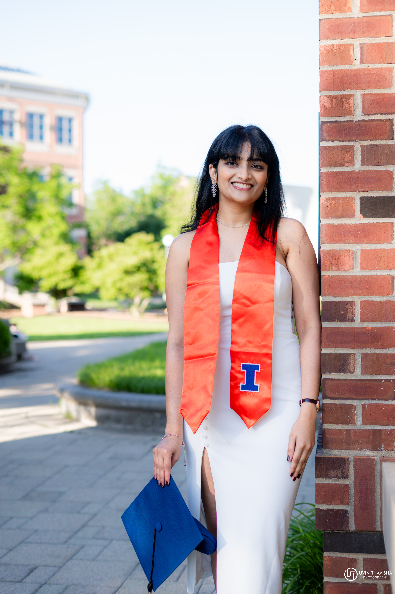

Fintech Data Scientist & ML Researcher. I build models that ship from LLM fine-tuning with preference optimization to financial forecasting at a large scale. I care about making models that are interpretable, reproducible, ethical, robust, and ensure production-grade reliability.

I'm a Data Scientist & ML Researcher at UIUC , concentrating in Data Science within my Master's in Information Management. My work lives at the intersection of statistical modeling, NLP, and large-scale ML systems — from fine-tuning LLMs with preference optimization to building financial forecasting models that handle billions in portfolio risk.
Open to research collaborations, full-time DS/ML roles, and connecting with new people!